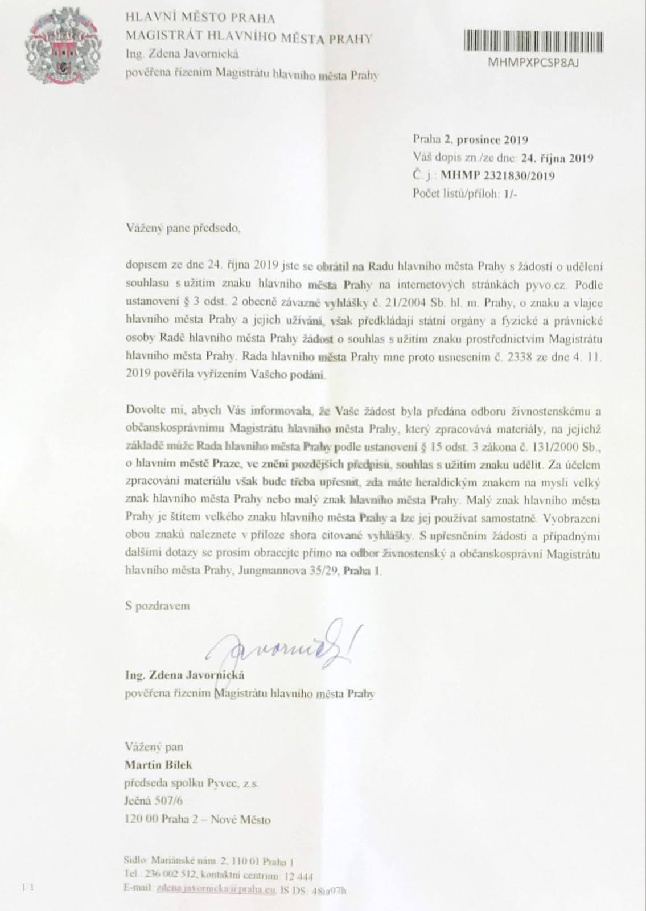

Zápisy ze schůzí: Období 2019–2022
17. 3. 2022
ucastnici: martin, jakub, ales
nikdo v members nevyzkousel helios voting
takze zkousime interne my
=> vypada to, ze to funguje, ale bude potreba spravne nastavit
nevim, co se stane, kdyz nebude dost kandidatu do voleb
a tudiz se nezvoli nova rada. neumeli jsme to vycist ze stanov.
kdyz to nevymyslime jinak, budeme se snazit na clenske schuzi
tech alespon 5 kandidatu vymyslet.
nekteri lide neobdrzeli calendar invite ani email,
takze zkousime update eventu, jestli to obdrzi lidi vic.
4. 3. 2022
ucastnici: martin, honza, jakub; chybi jirka, ales
UDĚLAT NAHRÁVKU CALLU PRO MEMBERS: nebyla technika - zoom
Někdo z výboru vezme e-mailové adresy členů ze seznamu členů a pošle jim pozvánku na členskou schůzi. Pozvánka musí obsahovat místo, čas a program jednání členské schůze. Kromě toho by měl výbor schůzi oznámit i v kanálu #pyvec-members. (Pro inspiraci, pozvánka na členskou schůzi EuroPython Society.)
Výbor dá členům vědět, jak lze podávat nominace, jak kandidovat. Kandidovat do výboru může jakýkoliv člen Pyvce.
vyzkouseni live helios voting
od minule schvaleni od petra viktorina, ze se da hlasovat vicekrat a plati posledni volba
do pristi schuze musime vyzkouset nejaky test voting, zkousime pyvec-members, zda nam nekdo pomuze
jinak to pushne jakub
svolavame clenskou schuzi na 21/3 18:00, honza vzal email seznam memberu z tabulky na google drive
oslovujeme na slacku lidi, at kandiduji - pripomene, ze se kandidati muzou nominovat.
do clenske schuze bude jeste jedna schuze vyboru - mozna osobne pred prg python srazem 16/3
18. 1. 2022
ucastnici: ales, martin, honza, jakub; chybi jirka
dneska zase nahravame
prochazime komentare k pull requestu dokumentace k volbam
https://github.com/pyvec/docs.pyvec.org/pull/255
komentare schvaleny a PR mergnuto
resime volby:
potencialni termin zacatku 21/3
lze menit kandidaty behem voleb?
z toho plyne pouziti nastroje na volby,
pokud lze menit hlasy behem voleb,
pak neni problem
je potreba aby kandidati souhlasili s nominaci
^^ honza pridava do dokumentace a odesila PR do pyvec-members
4/5 hlasujeme pro 21/3 termin volbe, mame do te doby jeste 2 mozne board cally
pristi call 15/2 v 15:00
do priste rozhodnout volebni system (software)
priste rozhodnout announcement voleb
14. 12. 2021
ucastnici: ales, martin, honza, jakub; chybi jirka
dneska nahravame call pro members
prochazime karticky ke schvaleni
pyvec members ucetnictvi zakladame slack kanal, aby mohl asynchronne burak zodpovidat dotazy
honza nam ukazal pull request dokumentace k voleni do vyboru
podivali jsme na sloupecek todo a doing
debatujeme, zda nahrat i dalsi call
23. 11. 2021
ucastnici: semik, honza javorek, jakub
poslali jsme mail clenum a planujeme schuzku s finacni okolo dotazu z posledni valne hromady
naplanovali jsme dalsi schuzku nad filosofickymi dotazy
budik na volby vyzdvihnut - duben 2022 uz se blizi
UDĚLAT NAHRÁVKU CALLU PRO MEMBERS
15. 9. 2021
ucast: plna!!!
jakub, martin, honza, ales, jirka
plzenske pyvo sponsoring
schvaleno dle money.pyvec.org, diskuze v github issue zamcena a cekame na blog post
pycamp.cz
domena zargistrovana
podekovat ZF
jelikoz je to korporat a nemaji twitter, nas kontakt je happy tak jak to je
zodpovedet dotazy s ucetni
my jsme zdokumentovali tricka, potrebujeme text overit s ucetni, martin se ozve ucetni (text je na webu!)
dotazy miro a torsava
jsme za ne radi, protoze je to dukaz, ze pyvec nekoho zajima. pouceni z minule schuze: poslat dopredu podklady, at si to clenove muzou precist klast dotazy pred schuzi
sdileni hesel
resime, zda jich mame tolik, aby to potrebovalo system (zatim jen jedno heslo), jinak to nechame pristim generacim
co pyvec dal?
resili jsme, ale budeme resit dal osobne - nejdulezitejsi udrzet non profit pro financniho prostrednika, ale budeme debatovat vic osobne.
co admin pracovnik pro pyvec? co grant na zpropagovani grantu? atd..
19. 5. 2021
Zápis chybí.
21. 4. 2021
Zápis chybí.
17. 3. 2021
Zápis chybí.
17. 2. 2021
Martin Bílek se sešel jen s Jakubem Vysokým a i tak uskutečnili jednu důležitou součást meetingu: Naplánovali další meeting na 17.3.2021. Pozdě, ale přece, ještě dorazil Honza Javorek na závěrečnou diskusi.
21. 1. 2021
Zápis chybí.
16. 12. 2020
Proplatili jsme PyData fakturu pro Jana Pipka.
11. 11. 2020
Zápis chybí.
13. 10. 2020
prošli jsme rychle kartičky v boardu a dohodli další schůzi na 10.11. v 15:00
9. 9. 2020
Minule jsme toho moc neudělali, takže víceméně vše z minula.
pyvec granty jsou řešeny přes github issues - na web se dostávají pomocí pull requestů
honza zaridi prodlouzeni benevity na dalsi rok @honzajavorek
honza slibil vybrat postu v hubu 22.9. @honzajavorek
13. 5. 2020
Minule jsme toho moc neudělali, takže víceméně vše z minula.
8. 4. 2020
Přítomni jen Martin Bílek a Honza Javorek, nebylo co schvalovat, jen jsme posunuli nějaké kartičky v Trellu a naplánovali další meeting. Martin řeší vracení peněz sponzorům PyCon CZ, který byl zrušen. Co se týká rupy, tak Honza udělal na tento úkol kartičku.
18. 3. 2020
pritomni: bilek, vysoky, barton, javorek
vsechno krome pyconu chceme presunout na priste
jeste ale schvalujeme granty, honza javorek sice nedodelal/nedodokumentoval
system, ale uz se pouziva github/pyvec/money
je tam pro ivouni za meetup.com pro ivouni
schvalujeme. to same se prihlasi jirka. martin proplaci uz lumirovi do ostravy.
jak to pripadne mergnout? nekdo se toho zkusi ujmout. je na to karticka.
grant pro prazske pyladies schvalen.
pycon: zruseno. martin resi vraceni penez sponzorum.
priste 8/4 15:15
12. 2. 2020
ucast:
jakub, martin - ve fraga office
honza, jirka - telepresent
schavulejeme veci „ke schvaleni“:
zapis ze 23/10 (schvaleno)
financni API pyvce (schvaleno)
financni api pyvce akorat nema pycon
tasky z minula:
penize z rupy? nemame od martina, do priste
jakub nepusnul zapis.
ales nezapsal schvaleni grantu.
prochazime todo sloupecek v trello:
jak vyresime voleni boardu a voleni predsedy?
z minuleho zapisu neco mame a mame dalsi tasky v trello
jak vybirat postu?
hub. latentne na to myslim.
udelali jsme si task na pristi call, zda byla vybrana posta.
jakub to idealne pred pyvem vybere.
zdokumentovani board callu
low important task
zdokumentovat cleny pyvce (co GDPR a spol)
skutecne ani rada nevi presne, kdo kazdy je clenem
(puvodni clenove rady jsou ted clenove pyvce
a pak mame ty nove prijate v historii schvaleni)
! nemame gpdr dokumenty
javorek z tohoto udela ukoly ^^
jednou za rok clenska schuze
v roce 2019 jsme nevedeli jak.
ales navrhoval, aby byl osobne pre-pyvo, ale honza argumentuje,
ze potrebujeme lidi z brna, ostravy a spol.
honza predcetl z osnov co se vsechno clenske schuze tyka.
=> vytvarime task na „svolani clenske schuze“
jak se resi vyrocni zpravy?
martin da na drive vsechny vyrocni zpravy, ktere ma
honza zdokumentuje, co s nimi
budik na volby do vyboru
jeste nevime jak volit, ale pak bude budik
honza: 8/4/2019 byla prvni volba (nove stanovy)
funkcni obdobi je 3 roky.
ucetni zaverka
merge s taskem vyrocni zpravy
honza: stacil by blog post, co jsme podporili, co se povedlo, co se nepovedlo?
otevreny system na granty na gh issues
honza na tom zacal delat dneska
ted se to pise do #money kanalu ve slacku
github.com/pyvec/money
dokumenace hlasovani**
emoji navrh:
palec nahoru - prijimam, palec dolu - neprijimam, oci - zdrzuju se
priste!
kdy call priste? 18/3 15:15 ales udela!
úkol „jak vyresime penize z RuPy“ se přesouvá na příště - šemík se tomu nepověnoval
15. 1. 2020
online call
ales+jakub+martin+honza+jirka
honza+martin ve fraga
od posledne zadni novi clenove
od predvanoc je tam zadost od petra viktorina
je to odhlasovany, ale neni to ostemplovany
-> je potreba zapsat do notes a dat petrovi vedet
docs.python.cz
ales si to vyzkousi, honza mu dela karticku
sponzori pro aktivity pyvce, aby nekdo delal pyvec fulltime
honza> postnout to na slack
protoze se deje spoustu veci v komunite a mozna jsou v komunite lidi,
kteri by to mohli delat
odblokovali jsme jeden smer, lidi si muzou brat penize z pyvce
je mozno si zazadat o penize na podporu svych aktivit
ale chce to i PR smerem do sveta, ale vlastne na co to PR ma byt?
honza> prijemci grantu musi napsat blog post, z cehoz plyne potreba
mit blog lepe pristupny pro pisatele.
pyvec je prutokovy ohrivac na penize, musime motivovat lidi
aby si o ne rikali.
ukoly:
call for ideas na slack ozivit blog
!!! off-topic
rupy penize -> potrebujeme od ucetni vetu ala:
mame zbytek penez z rupy a potrebujeme je zlegalizovat
budeme resit priste
!!! /off-topic
pristi sraz: 12/2/2020 v 15:15
pak uz se jenom ales a honza bavili o tom, jak by se dalo udelat hlasovani
do boardu. ales navrhoval neco ala voleni do europythonu.
sejit se 30 dni pred predanim moci vsichni clenove pyvce maji 5 hlasu
kandidovat muze jakykoliv clen (idealne na navrh boardu) probehne volba, bere se prvnich pet, dokud je shoda, tak se musi hlasovat znova (rekurze)
-> pak uz si novy board musi zvolit predsedu a pokladnika
(mozna bude potreba vyresit, co kdyz si nikoho nejsou schopni zvolit)
az bude finalni navrh, tak to nechat neformalne odhlasovat ^^
zadni novi clenove se nehlasi
grant je pouze pro petra viktorina, @not_aleszoulek udela pull request dle dokumentace na docs.python.cz
co se tyka propagace pyvce aktivit, tak udelame post do slacku, jestli se nekdo chytne
rupy penize vyresime priste, ja zjistim od ucetni jak to udelat podle pravidla „pravda a laska“
11. 8. 2020 - elektronické hlasování výboru
Dne 1. 8. Jan Č. požádal emailem o přijetí za člena do spolku. Výbor o tomto elektronicky hlasoval 11. 8., kdy bylo hlasování uzavřeno s následujícím výsledkem:
Martin Bílek: ano
Jan Javorek: ano
Jakub Vysoký: ano
Jan Č. byl 11. 8. přijat za člena spolku.
11. 12. 2019 - Schůze výboru
Chybí Jirka (aby otestoval zápis), Aleš je v Mekáči.
agenda (private board): https://trello.com/c/8j5NJSeS/20-1112-1515
vypovězení AV firmě za Pycon
ostravská AV firma co dělala videa na Pyconu. Dostali zálohu (cca 1/2 finální částky). Lumír to řeší měsíce, zatím nendodali nic (ani promo videa, ani záznamy). Už jim napsal, že se smlouva vypoví.
Týká se to účetnictví Pyvce. Chybí nám daňový doklad na alespoň tu zálohu (což zní jako fér odměna za to, co už udělali). Honza četl mail od Lumíra pro AV firmu: 17500 je záloha. Možná se na doklad vykašleme, protože budeme muset řešit účetnictví jinak.
Lumír to má na starosti. Za Pyvec cíl: neblokovat Lumíra. Do budoucna: bylo by dobrý aby tohle bylo řešeno ve smlouvě dopředu, aby zdrojová videa byla naše, abychom je měli k dispozici, atd, atd.. Honza píše všechno Lumírovi do kanálu na Slacku
finanční API Pyvce
Honza napsal, Martin nečetl, je to v pull-requestech. Honza píchnul do pár lidí, ať mu to přečtou (např Miro). Je potřeba přečíst i formální správnost, takže musí Martin ~ je to dlouhý!
Pyladies trička
V rámci slacku se domluvilo, Pyladies Pyvec přispěje asi 10k
Filip V. - Olomouc
Sponzoring pyvo v Olomouci. Filip zařizuje peníze od někoho, tyhle peníze se posílají do nějaké školy za nájem.
Pyvec - standardní průtokáč. Takže se informujeme navzájem. My nikoho moc v Olomouci neznáme, jenom Honza tam jednou byl.
Nájem cca 80kc/h, takže by to při nejhorším nemělo bolet.
znak Prahy pro Pyvec
Přišel dopis od Prahy, že můžeme používat erb. Honza předá Mirovi, Martin pouští z hlavy.
Pyvec swag
Půllitry? Nebo něco dalšího? Starý pycon půllitr dělal Honza J. Tomáš E. dodá, kde se to tenkrát dělalo, možná dobrý nápad na revshare s pyvama a prodávat
Trello issues
Máme nový sloupec v trello „ke schválení“. Tam dávat všechno z „todo“ a během callu házet do „done“.
Jakub udělal příklad s issue přidáním nového člena (z čehož ještě neudělal 2 issues na samotné přidávání).
příště?
příští rok 2020
15/1 15:15
všichni pro, nikdo se nezdržel
Martin udělal event.

21. 11. 2019 - elektronické hlasování výboru
Dne 18. 11. Zuzana J. požádala o grant do výše 10 000 Kč na tisk triček pro PyLadies. Výbor o tomto elektronicky hlasoval 21. 11., kdy bylo hlasování uzavřeno s následujícím výsledkem:
Martin Bílek: ano
Jan Javorek: ano
Aleš Zoulek: ano
Grant byl schválen.
14. 11. 2019 - Schůze výboru
Od teď bude vždycky do příště agenda jako kartička v trellu.
Martin s Honzou vyřešil finanční API Pyvce, je to v nějakém dokumentu, pak by se to mělo přetvořit jinam.
Honza mluvil o grantu od někoho do Pyvce, řešilo se to v #money, pokud by to vyšlo šlo by do obálky pyladies.
grantíky
Někdo v #money požádá o peníze, pokud existuje spárovatelná platba od sponzora, peníze jdou rovnou. Příklad: žádost o peníze na trička pro pyladies a sponzor pošle peníze na trička pro pyladies.
Někdo požádá o grant na něco a v obálce peníze nemá, nebo je i v mínusu, pak hlasuje board. Příklad projektor pro pyvo.
Míní výdaje jdou víceméně rovnou, ale schvaluje se taky. Příklad bianco šek na 500,- měsíčně na pastelky a spol.
Nic z tohoto není zdokumentované a není formalizované, ale více méně se tak už děje. Je potřeba zrychlit hlasování. a nastavit, kde se granty drží, např: github issue s šablonou.
zápisy
Zápisy půjdou rovnou jako pull-request do docs.pyvec.org, všechno je open-source a pravda a láska, takže nemusíme nic filtrovat, maximálně se to v rámci přijmutí pull-requestu vyhodí, kdyby se řešilo něco hodně priváte, ale vlastně se nám ještě nic takového nestalo.
další
Jakub dodělá přijmutí Radky => elektronická schůze.
Ales nás poslouchá, ale druhou rukou jisti dceru na stěně. Ale dostává úkoly v Trellu.
Ales pošle pozvánku na 11/12 na 15:15
Jirka se odpojil a zbytek boardu probíral tajné věci :D
Jakub otestuje jak velká pruda je přidávat věci na docs.pyvec.org, jinak zápis může dočasně sedět jako comment v kartičce.
Hlasování bude pokračovat ve Slacku, ale asi není potřeba dělat screenshot. Je to pruda navíc a pull-request schvaluje někdo druhý.
23. 10. 2019 - Schůze výboru
Výbor se sešel ve Fragarii v následujícím složení:
Aleš Zoulek
Jakub Vysoký
Jan Javorek (online)
Jiří Bartoň
Martin Bílek
Úkol: Javorek zváží, zda by nechtěl pilotovat pozici „Pracuj pro python“, treba i placenou. Jeho slovy:
Bavili jsme se o tom, že abychom mohli řešit zaměstnance, měl by to nejdřív někdo z nás, kdo do komunity vidí, zkusit reálně chvíli dělat a zjistit co je vlastně potřeba, co je náplní práce, a jak tu práci dělat. Protože teď si pod tím každý představuje něco úplně jiného a vlastně ani není jasné, jestli je to potřeba. Až potom můžeme říct tohle je ta náplň a dělá se takto, a najmout člověka, kterému ji vysvětlíme, aby ji dělal. Ostatní z výboru mi navrhovali, ať zvážím, zda bych to nechtěl takto pilotovat já, jelikož do všeho vidím, všechny znám, a nemám teď pracovní poměr, tak by to bylo nejjednodušší. Třeba na měsíc. Já jsem odpoveděl, že o tom můžu uvažovat, ale minimálně v listopadu a prosinci to dělat nechci.
Úkol: Javorek se sejde s Bílkem na téma jak poskytuje Pyvce finanční podporu např pro PyCon CZ. Poznámky (které byly v době zveřejnění zápisu již zpracovány):
pycon vs pyladies vs pyvo-brno obálky.
ted muze na slacku do #money, vic info neni.
honza predstavil mini grantiky, alesovi dava smysl.
formular na venek? jak velke jsou obalky? martin to vi.
pyvec je legalni entita. pycon neni obalka.
pyladies si k nam muzou dat penize, ale zase si je berou.
pycon ma nove orgy kazde dva roky.
formular na grantiky -> staci aby to bylo github issue!
Úkol: Přijímání členů máme popsáno v docs.pyvec.org, ale je potřeba zdokumentovat poslední přijímání z 28. 9. 2019.
Úkol: Nastavit proces pro volbu členů rady. Zatím je zdokumentováno jen to, že funkční období je 5 let. Ve Slacku se Javorek ptal, jak to delají třeba hasiči (nebo jiné spolky).
Úkol: Založit pro radu na Trello přehled úkolů, které není vhodné sdílet s celým spolkem či širší komunitou. Aktuální seznam úkolů je:
Vybírat poštu v Hubu
Uspořádat výroční členskou schůzi
Vydat výroční zprávu
Schváleno: Pull requesty do oficiální části docs.pyvec.org by měla schvalovat rada.
Schváleno: Příští schůze bude 14. 11. 15:15 Zoulek udělal událost na Hangout. Javorek a Bílek se sejdou dřív, možná na oběd.
28. 9. 2019 - elektronické hlasování výboru
Dne 8. 9. Radka P. požádala emailem o přijetí za členku do spolku. Výbor o tomto elektronicky hlasoval 28. 9., kdy bylo hlasování uzavřeno s následujícím výsledkem:
Jiří Bartoň: ano
Martin Bílek: ano
Jan Javorek: ano
Jakub Vysoký: ano
Aleš Zoulek: ano
Radka P. byla 28. 9. přijata za členku spolku.
6. 9. 2019 - elektronické hlasování výboru
O přijetí za členy do spolku emailem požádali:
Dne 2. 9. Ondřej C.,
dne 3. 9. Štěpánka L.,
dne 4. 9. Zuzana J.
Výbor o těchto přihláškách jednorázově elektronicky hlasoval od 3. 8. do 6. 9., kdy bylo hlasování uzavřeno. Výsledek hlasování byl pro všechny přijímané členy stejný, následující:
Martin Bílek: ano
Jan Javorek: ano
Jakub Vysoký: ano
Aleš Zoulek: ano
Všichni zmínění byli 6. 9. přijati za členy spolku.
31. 8. 2019 - elektronické hlasování výboru
O přijetí za členy do spolku emailem požádali:
Dne 24. 8. Tomáš O. a Miro H.,
dne 26. 8. Lumír B. a Jaroslav V.,
dne 27. 8. Anežka M., Iva F. a Bára D.
Výbor o těchto přihláškách jednorázově elektronicky hlasoval od 31. 8. do 3. 9., kdy bylo hlasování uzavřeno s následujícím výsledkem:
Tomáš O.
Jiří Bartoň: ano
Martin Bílek: ano
Jan Javorek: ano
Jakub Vysoký: ano
Ostatní
Jiří Bartoň: ano
Martin Bílek: ano
Jan Javorek: ano
Jakub Vysoký: ano
Aleš Zoulek: ano
Všichni zmínění byli 3. 9. přijati za členy spolku.
2. 7. 2019 - elektronické hlasování výboru
Dne 2. 6. Petr V. požádal emailem o přijetí za člena do spolku. Výbor o tomto jednorázově elektronicky hlasoval od 2. 7. do 12. 7., kdy bylo hlasování uzavřeno s následujícím výsledkem:
Jiří Bartoň: ano
Martin Bílek: ano
Jan Javorek: ano
Jakub Vysoký: ano
Aleš Zoulek: ano
Petr V. byl 12. 7. přijat za člena spolku.